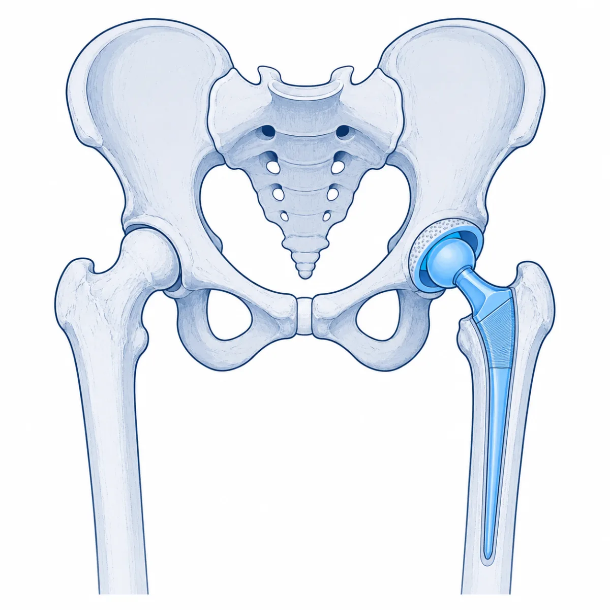
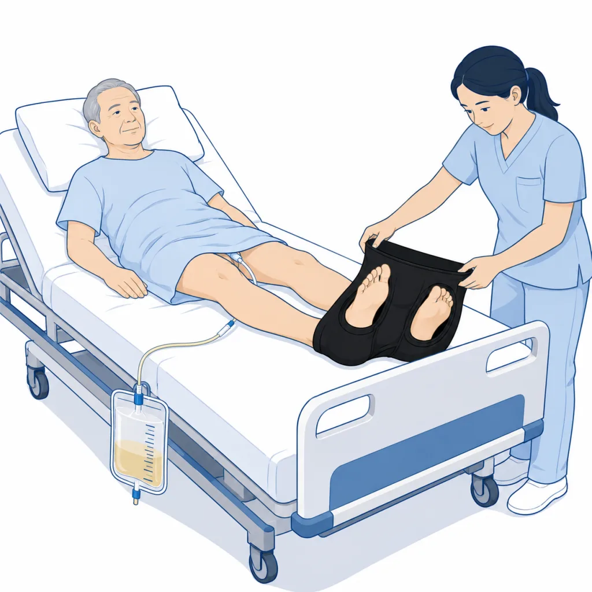
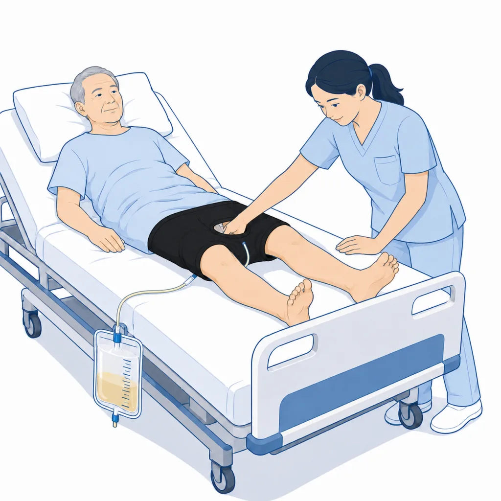
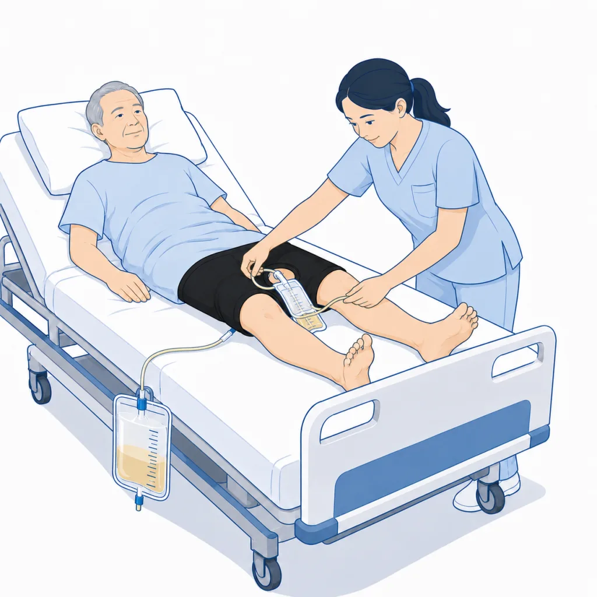
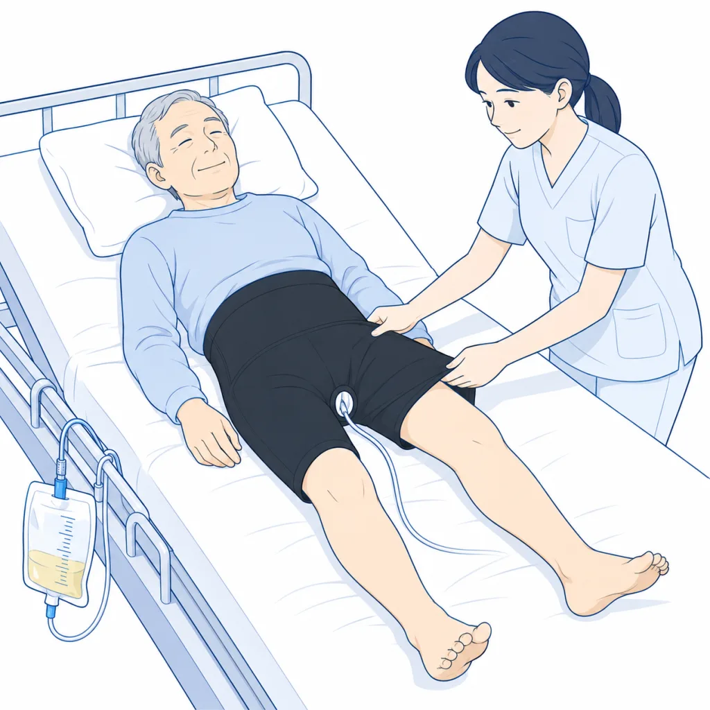
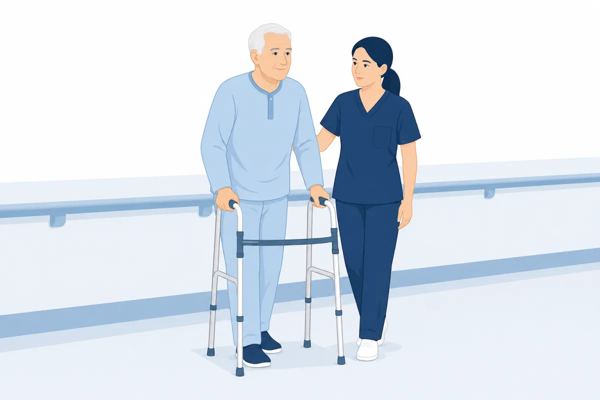

整形外科・病棟・リハビリテーション部門の皆さまへ
THA術後管理に、
「履かせる」という選択肢。
トータルHipサポーターは、股関節手術後の患者に手術室から着用させられる着圧サポートウェアです。ウエストから患部にかけて編み分けた3段階着圧と尿道カテーテル用開口部により、術直後からの装着を想定して設計されています。
- DAA-THA術後63例の臨床研究データ※1
- 尿道カテーテル留置中でも装着可能な開口部設計
- 衣料品のため滅菌不要・洗濯して繰り返し使用
※1 後ろ向き非無作為化研究。詳細はエビデンス参照。本品は医療機器ではありません。

01臨床背景 — 術後管理の課題
股関節手術後の管理では、創部周囲の腫脹への対応と、早期離床・リハビリテーションの両立が課題となります。従来の選択肢にはそれぞれ運用上の制約があります。
弾性包帯
鼠径部・股関節周囲はズレやすく、巻き直しの手間が発生。均一な圧の維持が難しい部位です。
特に何もしない
THA術後の下肢腫脹は術後5日目前後をピークとし、回復期の患者負担となります。※1
硬性装具・外転枕
体動制限を目的とした器具であり、圧迫による腫脹対策とは目的が異なります。
※各手段の位置づけはメーカー資料に基づく事実記述であり、優劣を示すものではありません。
02製品コンセプトと構造
トータルHipサポーター（製造: 助野株式会社／販売: 村中医療器株式会社）は、包帯では圧迫が難しい鼠径部・股関節への選択的圧迫に特化した、スパッツ型の着圧サポートウェアです。
- 3段階着圧設計 — ウエストから患部にかけて編地を切り替え、強・中・弱の圧力を配置。患部に強めの圧がかかる設計
- 尿道カテーテル用開口部 — 股部に開口部を設け、手術室での麻酔覚醒後から装着可能
- 全周性の圧迫構造 — 手術アプローチ（前方・後方等）を問わず使用可能
- 薄手素材（ナイロン87%・ポリウレタン13%）— 冷却材との併用可。PCMパック等を皮膚との間に挟むことも可能
- 男女兼用 M〜4L（ウエスト68〜124cm）
03エビデンス — DAA-THA術後の臨床研究
研究概要
| デザイン | 後ろ向き非無作為化研究 |
|---|---|
| 対象 | DAA（前方アプローチ）によるTHA術後患者 n=63 |
| 介入 | 手術室で装着し、術後1週間継続着用 |
| 主な評価項目 | 大腿周径（腫脹）・疼痛NRS(0-10) |
| 出典 | ScienceDirect掲載論文（PII: S2949705126000149） |
術後5日目の大腿周径変化（手術側近位）
着用群では術後5日目（腫脹ピーク時）の周径増加が有意に小さかったと報告されています。
疼痛NRSの推移
術後5日目のNRSは着用群で低く、12週時点でも着用群が低値だったと報告されています。
研究の限界（Limitations）
後ろ向き・非無作為化デザインであり、選択バイアス・交絡の可能性を排除できません。本結果は特定の条件下（DAA-THA・術後1週間着用）での報告であり、効果を保証するものではありません。本品は医療機器ではなく、除痛・腫脹予防を効能として標榜するものではありません。
参考: 試着アンケート（n=62・メーカー実施）
着用時の動きやすさ86.3%（良い/普通）・歩行のしやすさ77.3%（しやすい/普通）。一方で「ウエストがきつい」17%・「太ももがきつい」26%の回答があり、サイズ選定と装着前の説明が運用上の鍵とされています（離脱率 約3%）。
04装着手順 — 尿道カテーテル留置時
カテーテル用開口部を使うことで、採尿バッグを外さずに装着できます（手術室での麻酔覚醒後から）。
-

STEP 1両足を通す
仰臥位のまま、スパッツと同じ要領で両足をサポーターに通します。
-

STEP 2開口部に手を入れる
太ももまで引き上げたら、股部のカテーテル用開口部に手を入れます。
-

STEP 3バッグを外に出す
採尿バッグを折りたたんで持ち、チューブごと開口部から外側へ引き出します。
-

STEP 4引き上げて完了
サポーターを腰まで引き上げます。チューブ・バッグは開口部から外に出た状態になり、リハビリの妨げになりません。
運用メモ（メーカー資料より）
- T字帯の上から・直履きのいずれも可。慣れれば患者自身で着脱可能
- 術後24時間は連続使用、その後は間欠使用へ移行（メーカー推奨）
- 防水被覆材との併用可。関節内ドレーン留置中の使用は想定外（抜去後に使用）
- 厚手のおむつの上からの着用は難しい場合あり（下着程度の厚さを想定したオーバーパンツ）
- 「きつい」と感じる患者には、装着前に「リハビリのための圧迫である」ことを説明すると継続率が高い（離脱率約3%）
05病棟運用と患者への提供方法
洗濯・交換
衣料品のため滅菌不要。術後1週間程度は洗濯しながらの利用が推奨されています。長期使用者も多く、退院後もそのまま使用を継続できます。
サイズ選定
ウエスト基準でM〜4L。着圧が強めのため1〜2サイズ上の選定が推奨されています。使用頻度が高いのはLL・3L。腹囲100cm超の患者にも4Lで対応可能とされています。
患者への提供方法（2パターン）
①院内売店経由: 外来でサイズを説明し、売店から卸へ発注（次回外来・入院時までに納品）。
②病院備品: 病院が一括購入し、患者へ有償・無償で提供。

06導入の流れ・発注方法
- 1
オンラインで単品注文
村中医療器オンラインストア（商品コード V0300001）からサイズ指定で注文できます。まずは評価用の少数導入に。
- 2
院内導入のご相談
備品としての一括購入・院内売店経由での取り扱いは、村中医療器の担当営業所へ。仲介となる医療機関に手数料が残る提供形態の提案も行われています（メーカー資料より）。
- 3
運用開始
サイズ表・装着手順（本ページ）を病棟へ共有。装着前の患者説明で離脱を防ぎます。
医療機関向けのご相談窓口（販売元: 村中医療器株式会社）
本社 06-6943-1221（大代表）／東京支店 03-3813-9211（代）ほか全国営業所
村中医療器 公式サイト
07FAQ
- 医療機器ですか？
- 医療機器ではありません。サポート機能付きスパッツ（衣料品）です。除痛・腫脹予防等の効能を標榜するものではなく、術後管理を補助する衣料としてご検討ください。
- 適応（使用対象）の考え方は？
- メーカー資料では、THA（DAAでの実績が最多・ALSや後方アプローチでも使用/検証）、人工骨頭置換術、転子部骨折の術後、高齢者のリハビリ時、骨盤帯痛（産後含む）への着圧サポーターとしての使用が想定されています。
- ドレーンを使う場合は？
- 関節内ドレーン留置中の使用は想定されていません。抜去後の使用が推奨されています。ドレーン非使用のTHAでは術直後からの着用が可能です。
- 滅菌は必要ですか？
- 衣料品のため不要です。洗濯しながら繰り返し使用します。
- いつからいつまで着用させますか？
- カテーテル用開口部があるため手術室で麻酔覚醒後から着用可能です。術後24時間は連続使用、以降は間欠使用へ。術後1週間程度は洗濯しながらの利用が推奨され、その後は患者の判断に委ねられます（半年以上継続する患者も多いとされています）。
- コスト・価格は？
- 価格は村中医療器オンラインストアの商品ページでご確認ください。院内導入時の条件は担当営業所にご相談ください。